Add service flow: current state and redesign
A review of every service type on the Add service page (MySQL, PostgreSQL, MongoDB, Valkey, ProxySQL, HAProxy, External exporter, Amazon RDS, Azure), with screenshots from a live server, a list of problems ordered by impact, and mockups built with @percona/peak-ui 1.0.26 and MUI 7 for the move to the native PMM UI (PMM-15003).
Adversarial pass
This pass tried to break both the live flow and this review's own proposals. On the live server: keyboard-only use, axe-core 4.10 scans, 400, 768 and 1440 px widths, light theme, Back, Cancel and reload with data entered, malformed input, a duplicate service name, a wrong password against PMM Server's own PostgreSQL, and a capture of the request payload. For the proposals: an independent reviewer checked the report against the API definitions, server handlers and docs, and the same axe scan ran on the mockups. Nothing was added to the inventory.
Verdict
The diagnosis holds. F1–F13 reproduce. F1 is broader than first stated: every server-side error is a raw toast, not only connection failures.
The live UI has more serious problems than the first pass found. Errors below the fold are silent. Back, Cancel and reload throw away what you typed without asking. Region and Availability Zone entered for a self-hosted service never reach the server. The code shows two more silent defaults: a MongoDB TLS key password that is never sent, and MySQL table statistics turned off for good by default.
The redesign overreached. Test connection, grant verification, extension detection and "first metrics received" have no API behind them. My mockups failed more accessibility checks than the live UI and collapsed at phone width. Both are corrected below, and the mockups now mark what still needs backend work.
New problems in the live UI
Errors below the fold are silent
With one invalid custom label, pressing Add service at the top of the page changes nothing on screen. The error renders at y = 1216 px in a 900 px viewport. The page doesn't scroll to it, show a summary, or raise a toast. To the user, the button does nothing.
Back, Cancel and reload discard the form without asking
Browser Back followed by Forward returns an empty form. Cancel on step 2 goes back to the type picker rather than out of the flow, with no confirmation. A reload clears everything. Measured on MySQL and PostgreSQL with hostname, user and environment filled in.
Region and Availability Zone are silently discarded for self-hosted services
The captured MySQL request sends region and az at the top level, while add_node carries only node_name and node_type. AddMySQLServiceParams has no region or AZ fields (api/management/v1/mysql.proto), and the gateway runs with DiscardUnknown: true (managed/cmd/pmm-managed/main.go:405). The fix is UI-only: AddNodeParams already has region and az (node.proto, fields 8 and 9). Verified from the payload and code, not by creating a service.
Every server-side error is a raw toast, one per submit
A duplicate name shows "Service with name "pmm-server-postgresql" already exists." and leaves Service name unmarked. A wrong password shows pq: password authentication failed for user "pmm-adv-review" (28P01) and leaves the credentials unmarked. The name check runs before the connection check, so a form with both problems needs two failed submits to reveal them.
Server warnings never reach the user
When pg_stat_monitor is missing, the server falls back to pg_stat_statements and returns a warning (managed/services/management/postgresql.go:100-105). The UI discards the response, so the user believes pg_stat_monitor is in use.
Narrow screens: clipped fields and a hidden primary action
At 400 px the form content is 778 px wide inside a 344 px frame, so fields run off the right edge. Cancel and Add service collapse into a ⋮ menu. At 768 px the navigation drawer opens over the form by default.
Keyboard users reach the end of the form with nothing to press
Picker cards and fields are reachable and the focus ring is visible. After the last field, though, Tab leaves the page. Add service sits about 30 stops back, above the form, and 8 of those stops are tooltip icons.
Validation is thin and its messages expose internals
The client accepts http://db prod:3306/ as a hostname and a 300-character service name. Entering "abc" as max query length yields "Value should be greater or equal to -1". Entering "5 minutes" as timeout yields "Invalid duration" without the expected format. Error text sits flush against the next field's label.
Unknown types render a working-looking form
/add-instance/foo shows a generic "Add remote instance" form with placeholder Port (default: undefined ) and an active Add service button.
Accessibility scan: two real issues, otherwise clean
Error text (#e02f44 on #181b1f) is 3.83:1, below the 4.5:1 AA minimum. Headings jump from h1 to h3. Every input has a label, and the picker, MySQL, PostgreSQL and RDS pages showed no other WCAG A/AA violations.
The MongoDB TLS key password is never sent
The form field is tls_certificate_file_password (MongodbTLSCertificate.tsx:17), but the API expects tls_certificate_key_file_password (mongodb.proto:67). toPayload doesn't rename it and the gateway discards unknown fields, so a password-protected key can't work. Found in code by the reviewer and confirmed by reading it. Not reproduced live.
MySQL table statistics are off by default, unlike everywhere else
The form preselects "Disabled", which sends -1, and the server reads -1 as "never collect" (agent_model.go:978-979). The server's own default, which pmm-admin also uses, is a limit of 1,000 tables (mysql.go:42-48). A MySQL service added in the UI quietly gets less data than the same server added from the command line.
What held up: a double-click sends one request, the light theme renders correctly, picker cards are real buttons, and every input is labelled.


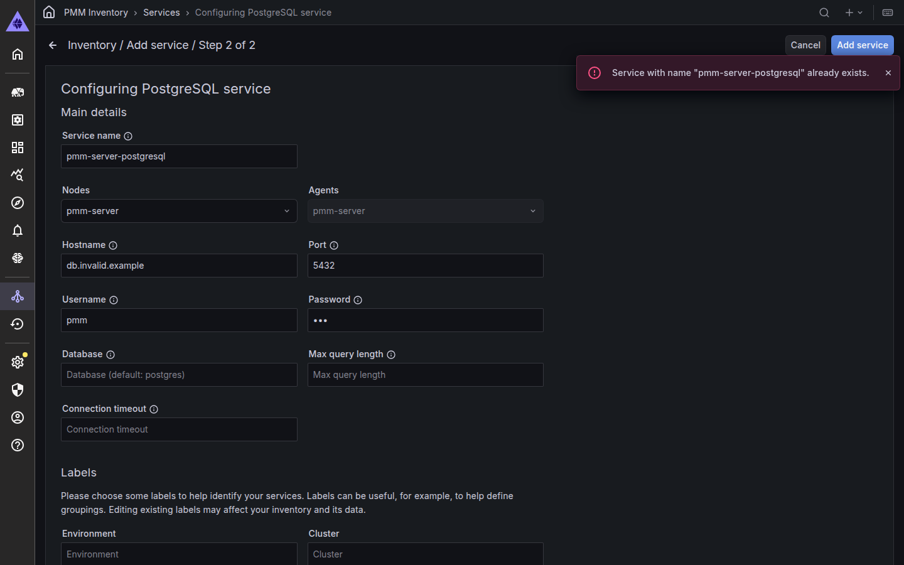
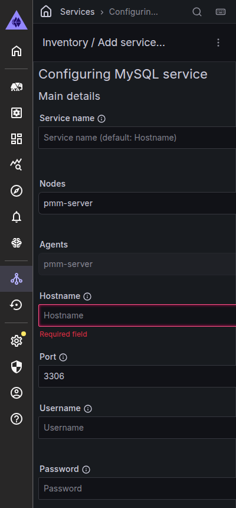
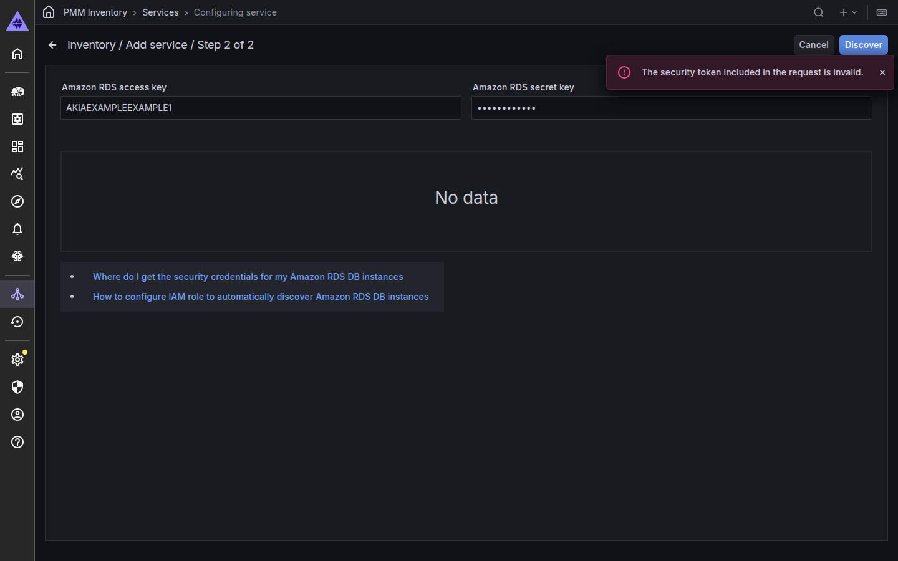
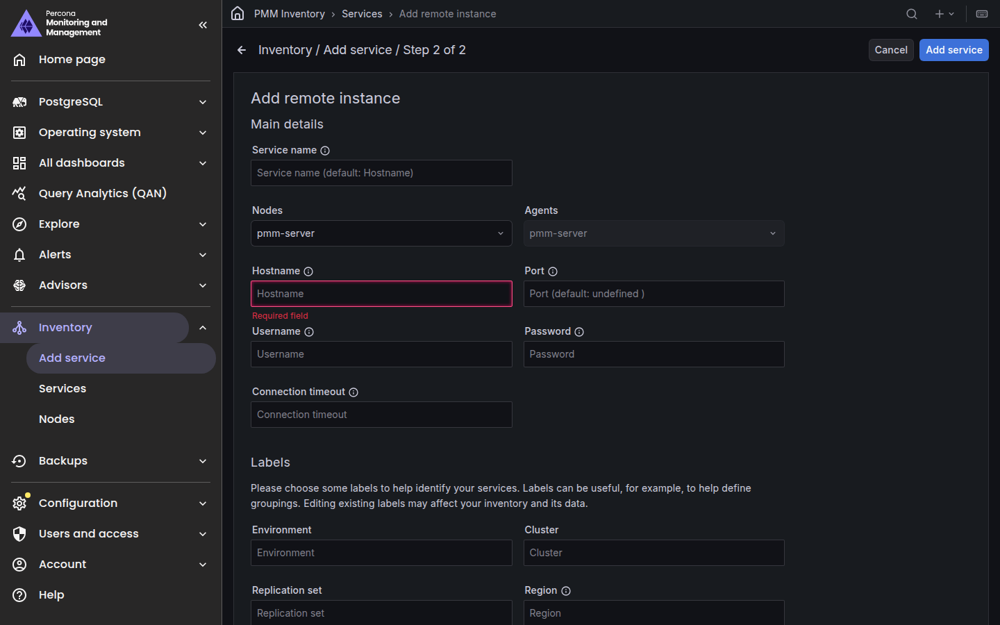
Where the first pass was wrong or overreached
"Test connection" has no API
ManagementService has no dry-run RPC (api/management/v1/service.proto). The check runs inside the add transaction, after the service and agent rows are created, and a failure rolls everything back (managed/services/management/mysql.go:40,117). Actions all need an existing service_id. Building it means a new additive RPC and a handler that assembles a DSN from unsaved models. The mockups now mark it, and the plan below splits UI-only work from work that needs the API.
The mockups showed facts nothing can supply today
"User has all required grants": the check returns one error string, so this needs new pmm-agent code and a version gate. "pg_stat_monitor detected" before submit: the server only learns it during the add. "First metrics received": the new UI has no metrics-query module. These were removed or marked. The success page now shows only agent status, which ListAgents already reports.
The copy-paste grants were wrong for many users
The block was MySQL 8.x only and used 'pmm'@'%'. The docs list no BACKUP_ADMIN for 5.7 and MariaDB. RDS uses SELECT, PROCESS, REPLICATION CLIENT plus SELECT ON performance_schema.*. The host should be the agent's address. The block now has a version switch and an <agent-host> placeholder.
The merged "Monitoring agent" select was under-specified
Today the Nodes select sets node_id only when the hostname is localhost or 127.0.0.1. Otherwise the UI creates a new remote node named after the service. metrics_mode is pull for PMM Server's node and push for any other (AddRemoteInstance.service.tsx:166-213). One select can carry all of this only if its options are agents labelled with their node, including nodes that run several agents. HAProxy and External have no pmm_agent_id and need a node select instead. The mockup's options and helper text now say this.
"Move Region and AZ to Advanced" was wrong as a blanket rule
For RDS, region is required and becomes an attribute of the RDS node, and discovery prefills it. A wrong prefill hidden in Advanced is worse than a visible one. For self-hosted services the values are currently lost (N3). New rule: keep them visible for RDS and Azure. For self-hosted, send them in add_node and keep them in Advanced.
Test-then-add either doubles the wait or loses data
Add re-runs the check, which takes up to about 3 s on a failing self-hosted connection and 6 s on RDS or Azure. Sending the add with skip_connection_check to avoid that loses MySQL table_count and the pg_stat_monitor fallback. A dry-run design has to hand its result to the add, or keep the add-time check.
My mockups were less accessible than the live UI
axe flagged icon buttons without names (back, remove label), key/value fields without labels, a radio button inside a clickable card, and no h1. At 400 px the fixed 340 px help panel squeezed the form to a sliver. In light theme the example placeholders ("orders", "rs0") read as entered values. All are fixed: no critical violations remain, and nothing overflows at 400 px.
Smaller misses
"Recommended" on pg_stat_monitor must not appear for RDS or Azure, which only offer pg_stat_statements. The Valkey card claimed Sentinel support with nothing behind it, so that's removed. Edit-instance reuses Labels (showNodeFields={false}), so refactoring the Grafana FormParts in place would break editing. A native success page must trigger the same inventory refresh that Grafana's SERVICE_ADDED event does today.
peak-ui defects the mockups inherit
CodeCopyBlock's copy button has no accessible name, and it puts aria-label on a span with no role. In pmmThemeOptions, secondary text is #898888 on white (3.53:1) in light mode and #878686 on #282727 (4.1:1) on dark cards. Error red is #ea5449 on #282727 (4.15:1). All of these fail AA for body-size text on every PMM UI page that uses them, so the fix belongs in peak-ui.
Design mistakes the reviewer caught in the mockups
The Environment select had fixed options, so a new environment couldn't be typed. "No limit" was the wrong hint for an empty max query length: the default is 2048 characters (4096 for MongoDB). PEM fields were single-line, so pasted certificates lost their line breaks. The picker's command used the admin password with --server-insecure-tls; the docs say to use a service account token. The redesign also reused the switch-plus-greyed-number pattern that F8 criticises. The agent choice the error message points to was hidden in Advanced. The code block sat blue-on-blue, "Test again" was 3.88:1, and the Azure card looked disabled but was still clickable. All of these are fixed in the revised mockups.
Errors in the first pass's description of today's UI
F2 said the check returns the version and pg_stat_monitor state. It returns only an error string. F10 said bad RDS keys give no error; they do, as a toast that expires. F1 said the button shows no progress; it is disabled, but there's no spinner. F6 counted six label fields; there are five. F12 said nothing mentions the 2s default; the tooltip does. F9 called the HAProxy and External gaps drift, but they come from the API. The HAProxy port is empty only on the captured feature build, since main prefills 8404. The matrix also missed that MySQL, PostgreSQL and MongoDB credentials are optional when TLS is on. Each of these is corrected in place below.
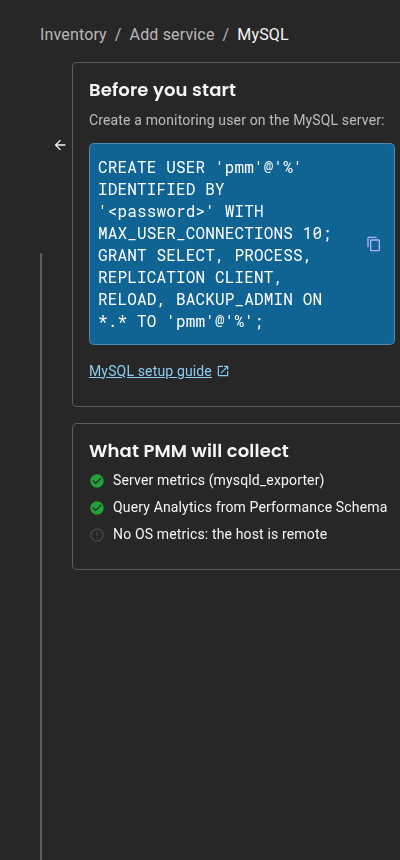
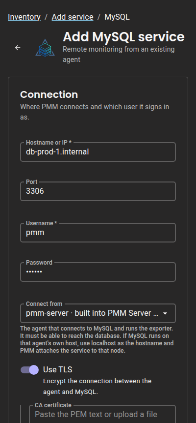
Fields the build plan must carry
The reviewer listed everything today's UI or API supports so none of it gets lost in the migration. The mockups only show MySQL and PostgreSQL in full.
The revised build plan is under Building it.
Summary
The flow does its job for someone who already knows PMM: pick a technology, fill in a long form, press Add service. It is hard for everyone else, for three reasons.
Failures are hard to recover from. You can't test a connection before submitting. When the server rejects one, the only feedback is a toast with the raw Go error (dial tcp: lookup db.invalid.example on 127.0.0.11:53: no such host), and it disappears after about ten seconds. No field is marked as the cause.
The form doesn't explain its own model. Every card says "Add a remote instance". Nothing says that installing PMM Client on the host gives more data. The Nodes and Agents dropdowns sit in "Main details" with no hint of what choosing a node changes.
Option layout follows the API, not the task. Labels take more room than the connection fields. TLS, QAN, privacy and performance options share one flat checkbox list with double negatives. Several controls expose sentinel values, such as a table limit of -1.
The redesign below fixes these issues inside the planned migration. The adversarial pass found that several of its elements need new API work; those are marked. It uses one page per technology with four sections: Connection with an inline Test connection, Name and labels, Query Analytics, and a collapsed Advanced section. It also adds a help panel, a footer that is always reachable, and a success page with next steps.
Findings
Ordered by impact on getting a first service monitored. IDs are referenced from the mockups.
Errors are a transient toast with raw backend text
A failed connection check shows Connection check failed: dial tcp: lookup … on 127.0.0.11:53: no such host in a toast that clears after about 10 s. The form gives no inline error, doesn't mark the field, says nothing about which agent tried to connect, and suggests no fix. The Add service button is disabled while the check runs, but there is no spinner or status text.
Seen on MySQL with an unresolvable host; same code path for every type (AddRemoteInstance.tsx only calls logger.error).
No way to test a connection before adding
The only check is the one that runs on submit. Bypassing it is a "Skip connection check" checkbox, the first item under "Additional options", far from the credentials it relates to. The server learns the version and, for PostgreSQL, whether pg_stat_monitor exists only during the add, and returns neither to the UI (S1, S2).
Remote vs. agent-based monitoring is never explained
All eight cards carry the same subtitle, "Add a remote instance". Nothing says that pmm-admin add on the database host is the preferred path for self-managed servers, because it gives OS metrics and slow-log QAN. The Nodes and Agents selects default to pmm-server. They list bare node names (node-01, node-02) with no network, version or status, and the Agents select is disabled whenever a node has one agent. Agents are listed by raw agent ID. The node choice only matters when the hostname is localhost, and for push or pull metrics mode (S4).
Hostname shows "Required field" before any interaction
On MySQL, PostgreSQL, MongoDB, Valkey and ProxySQL the form opens with Hostname already in an error state. The likely cause is that NodesAgents prefills address through form.change, which marks the field as modified. HAProxy and External have no node selector and open clean.
The primary action is far from the form
Add service and Discover exist only in the toolbar at the top right. The form is about 770 px wide and left-aligned, and the MySQL and PostgreSQL forms are about 2,000 px tall, so after the last field there is nothing to press. Navigation labels also disagree: the toolbar says "Inventory / Add service / Step 2 of 2", the breadcrumb says "Services › Configuring MySQL service", and the side nav highlights "Add service".
Labels take more room than the connection
There are five label fields plus a free-text key:value textarea, shown in full before any QAN option. Region and Availability Zone appear for every remote type, and for self-hosted types the values never reach the server (N3). Environment is free text with no suggestions from the services already in the inventory, so prod and production drift apart.
"Additional options" is a flat list with double negatives
Connection, security, QAN, privacy and performance options share one checkbox column. "Disable comments parsing" is checked by default. "Skip TLS certificate and hostname validation" shows even when TLS is off. "Use performance schema" never says it is the QAN source. TLS certificates are three empty 100 px textareas with no file upload, in the order CA, key, certificate.
Three-way toggles with a disabled number field expose sentinel values
Table statistics limit has Disabled / Default / Custom next to a greyed-out -1. PostgreSQL auto-discovery has Enabled / Disabled / Custom next to a greyed-out 10. Max connection limit is Disabled next to a greyed-out 5. In each case the user has to learn the encoding before they can see the actual choice. MySQL's preselected "Disabled" also turns table statistics off for good, while the server and pmm-admin default to a limit of 1,000 tables (N12).
Technologies drift apart
HAProxy and External have no node or agent select and no connection timeout. That comes from the API, not drift: neither takes a pmm_agent_id or a timeout, and PMM Server scrapes them. On the captured build HAProxy's required port is empty, with placeholder Port (default: 8404 ) including the stray space; main prefills 8404. MongoDB's service name has no tooltip. MySQL and MongoDB put "Max query length" in Main details, while PostgreSQL pairs it with Database. External has a "Group" field with no placeholder. See the field matrix.
RDS discovery has no clear states
On load the page runs discovery with the server's own identity and shows an unlabelled spinner. When that finds nothing it shows "No data" with no reason. Bad keys raise a toast such as "The security token included in the request is invalid.", which clears after about 10 s and leaves only "No data". The Discover button is in the top toolbar, away from the credential fields. On main a third field, Role ARN, joins the keys with a "mutually exclusive" rule that the layout doesn't convey.
Card picker gives little to choose by
RDS and External use the generic database icon. The subtitles are identical. There is no grouping (databases, proxies, cloud discovery) and no search. The Azure card disappears when the feature is off, with no hint of where to turn it on, yet /add-instance/azure still opens the form.
Field copy repeats labels and hides units
Most placeholders repeat the label (Hostname → "Hostname"). Connection timeout expects a Go duration (2s) but only the tooltip mentions the 2s default. The placeholder and the field don't show the format. The Max query length tooltip reads "Full Example (Fingerprint) storage is not allowed by default to have the best performance".
Success is a toast and a redirect
After adding, the user lands on the inventory list. There is no link to the new service's dashboard or QAN and no confirmation that data is arriving, which is the moment users most want reassurance.
Current state by technology
Full-height captures of each form. Scroll inside a frame to see the rest; open an image to view it at full size.
Step 1: choose a type
- Eight cards, all "Add a remote instance" (F3, F11).
- RDS and External share the generic database icon.
- Azure hidden unless enabled in Settings.
- Only one action, Cancel; the cards act as buttons with no hover affordance beyond the card.
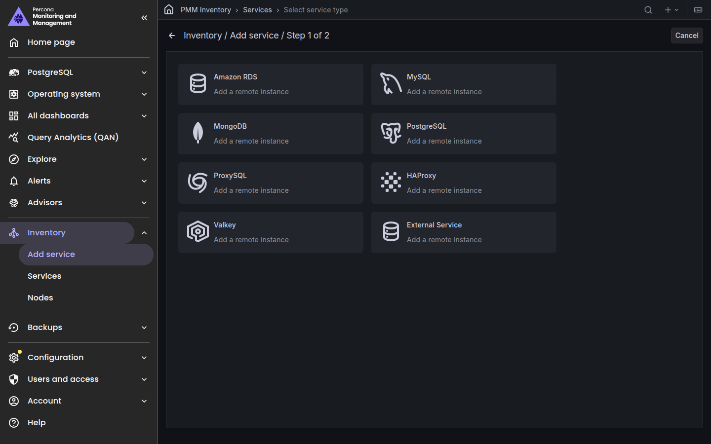
MySQL
- Opens with Hostname in an error state (F4).
- Labels block sits before QAN options (F6).
- Turning on TLS adds three bare textareas mid-list (F7).
- Table statistics: Disabled / Default / Custom plus
-1(F8). - Submitting against a bad host gives only the toast, gone by 15 s (F1).

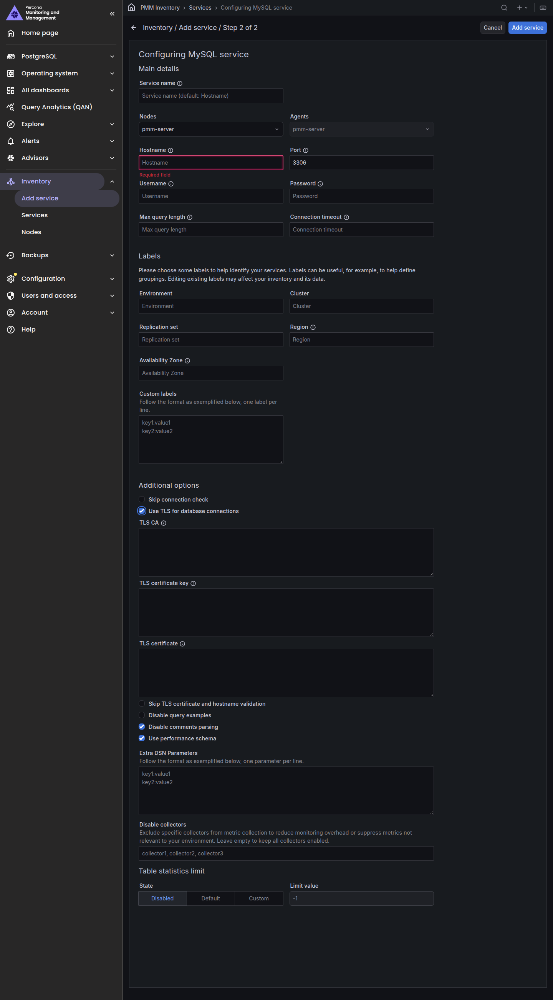
Connection error (all types)
- 3 s after submit: a toast with the raw resolver error, partly covering the toolbar.
- 15 s after submit: the toast is gone and the form looks untouched.

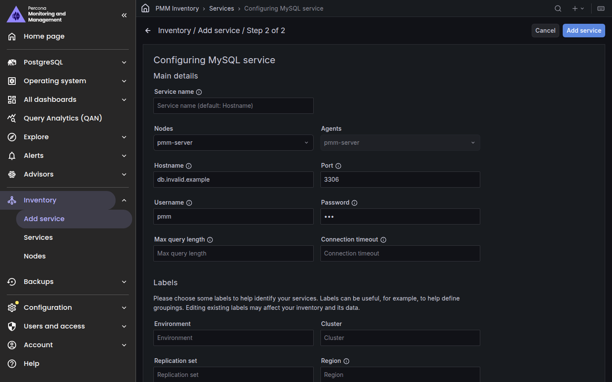
PostgreSQL
- The longest form, about 2,050 px.
- "Stat tracking options" is a three-way segmented control. It doesn't say which extension is installed or recommended.
- Auto-discovery and Max connection limit both use the toggle-plus-disabled-input pattern (F8).
- Node list shows bare names (F3).
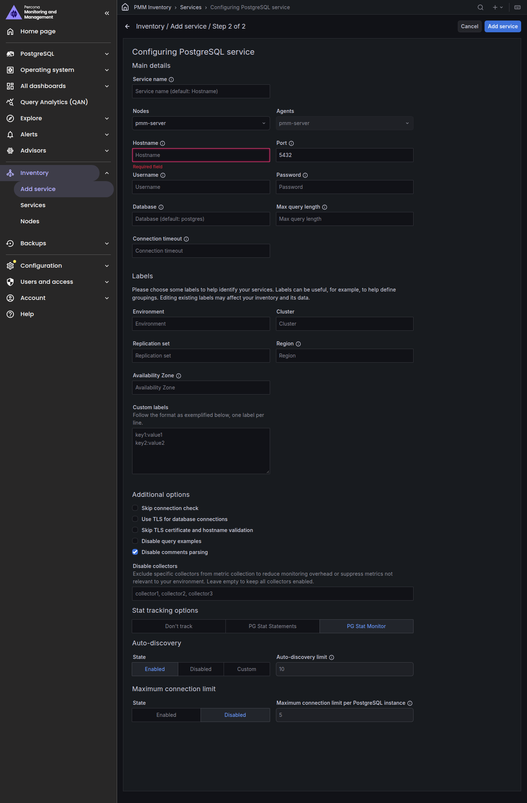
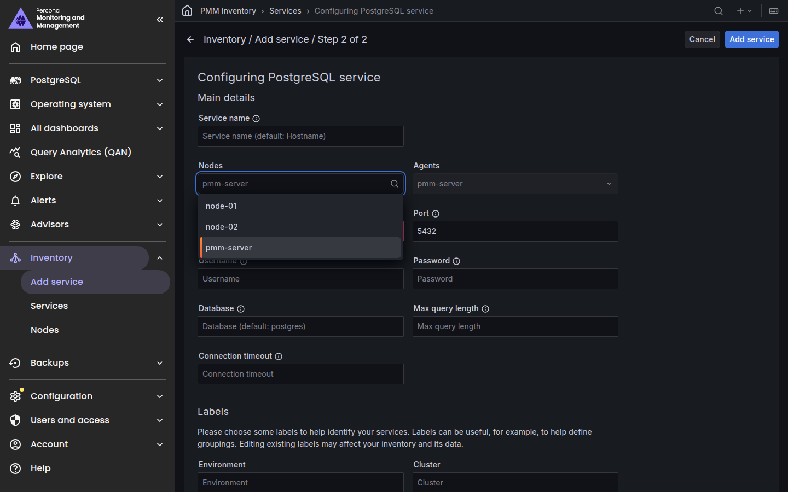
MongoDB
- Service name has no tooltip, unlike the others.
- "Use QAN MongoDB Profiler" is off by default and sits with TLS options.
- No connection-string input, although most MongoDB users have a URI at hand.
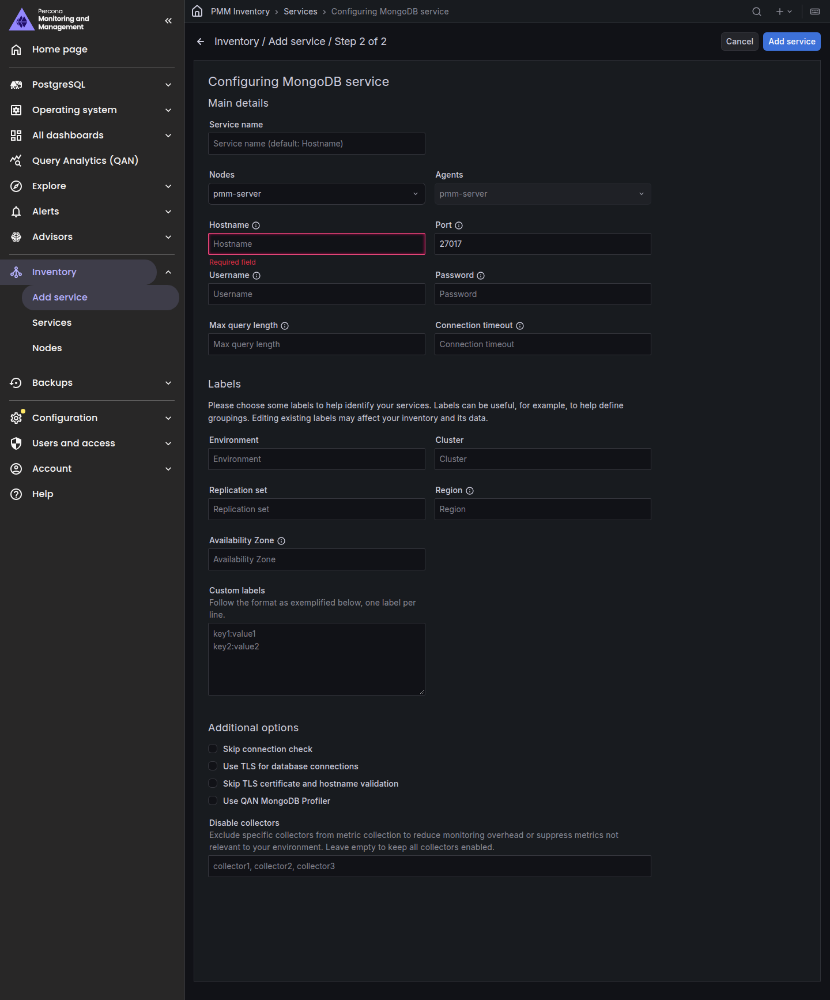
Valkey
- Same layout as MySQL without QAN.
- Username and password are optional (as the code says) but nothing marks them so.
- No hint about cluster setups.
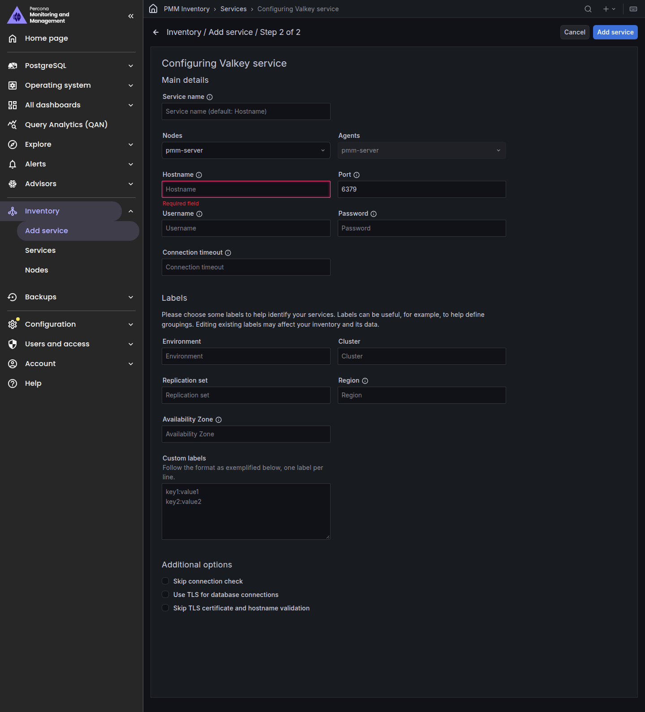
ProxySQL
- Uses the generic Main details. Username and password are the ProxySQL admin credentials, but the copy says "Your database user name".
- TLS has no certificate fields, unlike MySQL.
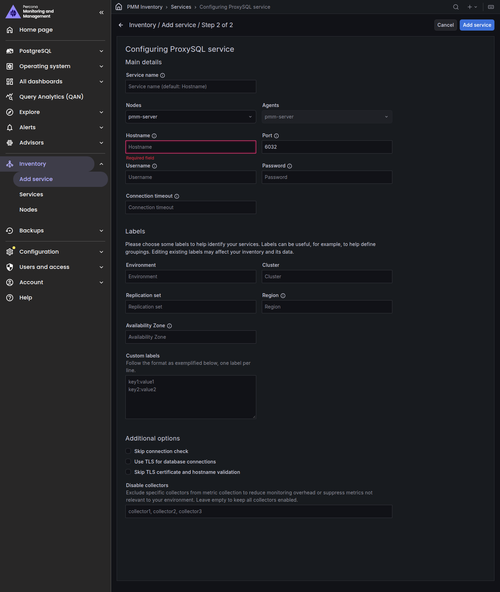
HAProxy
- No node or agent select: PMM Server scrapes HAProxy, and the API has no agent field.
- On the captured build the port is empty with placeholder
Port (default: 8404 )(F9);mainprefills it. - No connection timeout, as in the API.
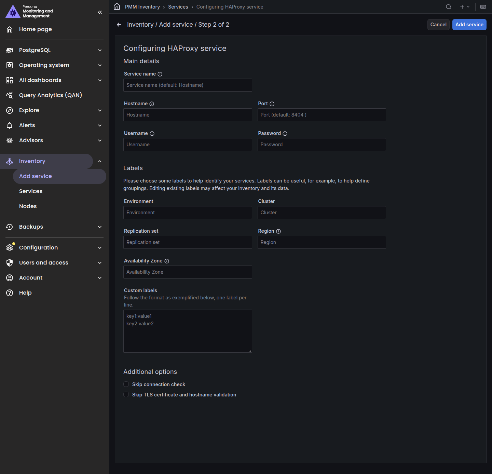
External exporter
- "Set manually / Parse from URL string" switches the whole block. Pasting a URL is the common case and should be the default.
- "Group" is unexplained beyond "Group to which your service belongs".
- No node select or timeout, as in the API.
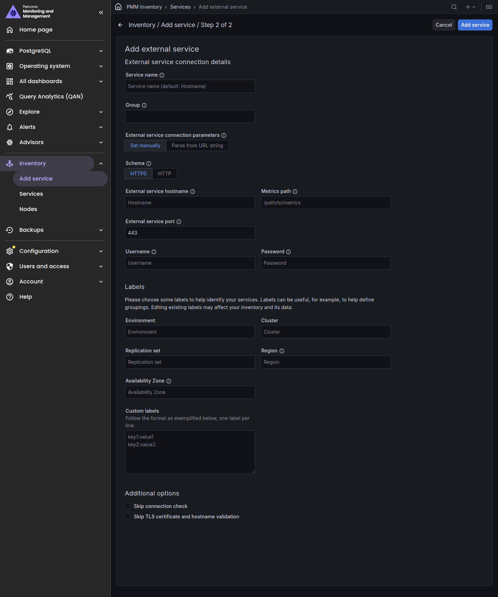
Amazon RDS
- Unlabelled spinner on load while discovery runs with the server identity (F10).
- Bad keys produce a toast that clears after about 10 s, then only "No data".
- Docs links float in a separate grey box under the table.
mainadds a Role ARN field that this instance doesn't have yet.
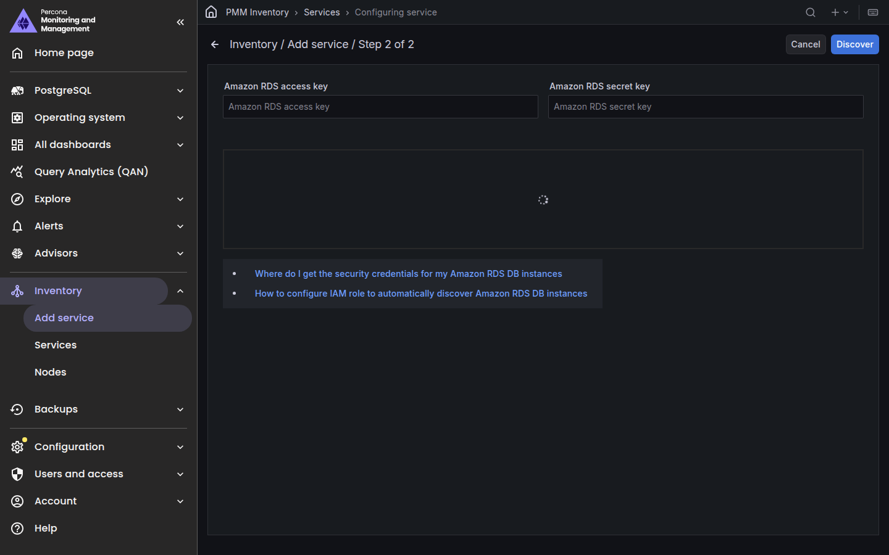
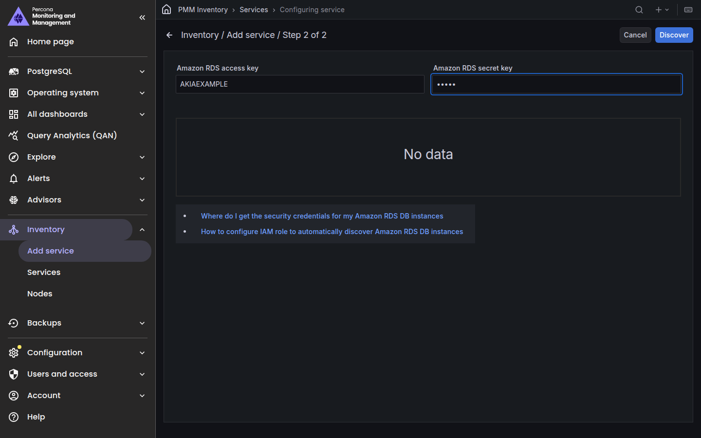
Azure
- Hidden from the picker when off, but the URL still works (F11).
- A large "No data" block shows before any search.
- Four credential fields with no grouping or explanation of where each comes from.
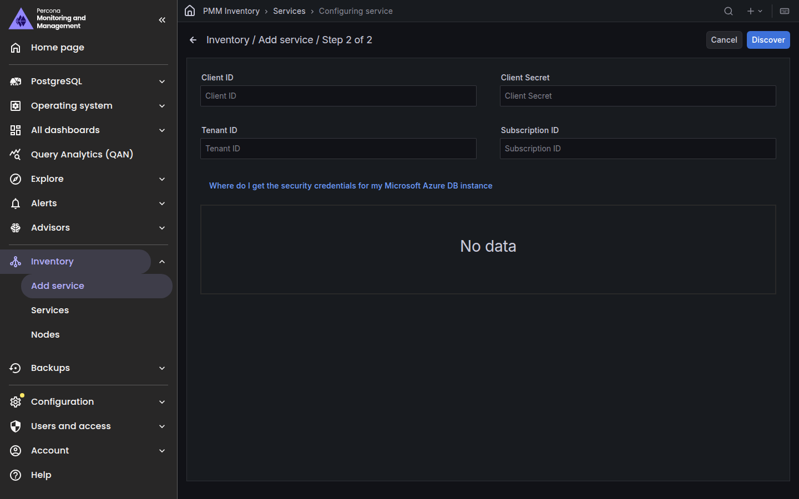
Field matrix
What each form shows today, read from the code and confirmed on the live server. Amber marks an inconsistency worth deciding on during the migration.
| Field | MySQL | PostgreSQL | MongoDB | Valkey | ProxySQL | HAProxy | External |
|---|---|---|---|---|---|---|---|
| Connection | |||||||
| Service name | yes | yes | no tooltip | yes | yes | yes | yes |
| Node and agent | yes | yes | yes | yes | yes | not in API | not in API |
| Hostname / port | 3306 prefilled | 5432 prefilled | 27017 prefilled | 6379 prefilled | 6032 prefilled | empty on captured build; main prefills 8404 | 443 prefilled |
| Username / password | required unless TLS | required unless TLS | required unless TLS | optional, unmarked | required | optional | optional |
| Database | – | yes | – | – | – | – | – |
| Connection timeout | yes | yes | yes | yes | yes | not in API | not in API |
| Max query length | main details | with database | main details | – | – | – | – |
| Scheme, metrics path, URL parse | – | – | – | – | – | – | yes |
| Security | |||||||
| TLS | yes + certs | yes + certs | PEM + password; password dropped (N11) | yes + certs | no cert fields | – | – |
| Skip TLS verification | yes | yes | yes | yes | yes | yes | yes |
| Query Analytics | |||||||
| QAN source | perf schema (on) | pgsm / pgss / off | profiler (off) | – | – | – | – |
| Query examples / comments | yes | yes | – | – | – | – | – |
| Collection tuning | |||||||
| Disable collectors | yes | yes | yes | – | yes | – | – |
| Extra DSN params | yes | – | – | – | – | – | – |
| Table stats limit | default "Disabled" = never (N12) | – | – | – | – | – | – |
| Auto-discovery / max conn. | – | yes | – | – | – | – | – |
| Labels | |||||||
| Env, cluster, repl. set, custom | yes | yes | yes | yes | yes | yes | yes |
| Region, AZ | shown, dropped (N3) | shown, dropped (N3) | shown, dropped (N3) | shown, dropped (N3) | shown, dropped (N3) | shown, dropped (N3) | shown, dropped (N3) |
Mockups
Rendered from a small React app using ThemeContextProvider with pmmThemeOptions, peak-ui form inputs (TextInput, SwitchInput, SelectInput, CodeCopyBlock, Stepper, the database icons) and plain MUI for layout. They show content only, without the PMM nav shell. Sample data is invented. Revised after the adversarial pass: dashed amber chips mark elements the current API can't back, and the revised set passes axe's WCAG A/AA checks except for the peak-ui issues listed under S9. Mockup source (TSX).
1. Choose what to monitor
- A callout up front states when to install PMM Client instead, with token-based commands ready to copy, as the docs recommend.
- Cards are grouped by kind and searchable. Each says which versions it covers and what it collects (Metrics, QAN, Discovery).
- Azure stays visible when turned off. It is truly inactive, with a "Turn on" link to Settings.
- RDS and External get their own icons.
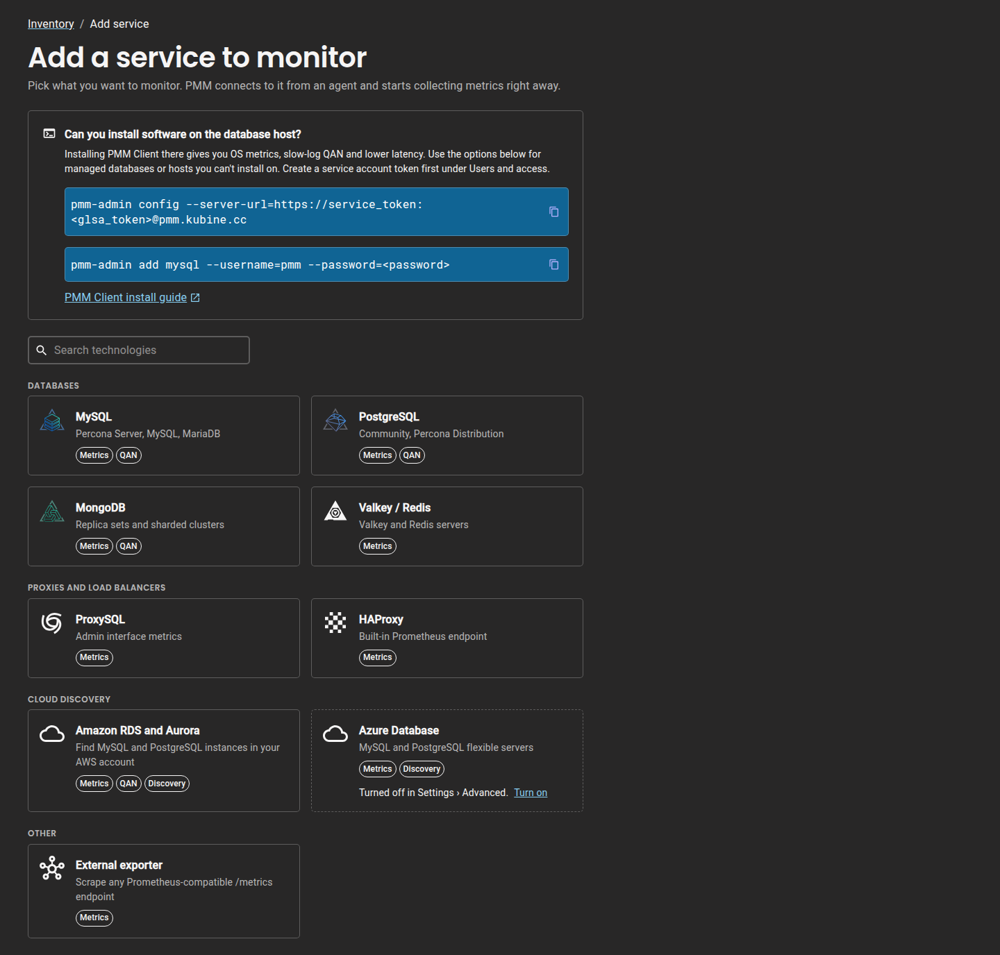
2. One technology form, four sections
- Connection first. It includes Connect from, the agent that runs the exporter, listed by node, version and status. A Test connection button is shown, but it needs a new dry-run RPC (S1). Until then, the check runs on Add service.
- Name and labels: service name with a real default hint, Environment as free entry with suggestions from existing services, and custom labels as labelled key/value rows. Region and AZ move to Advanced for self-hosted types and are sent in
add_node(N3). They stay visible for RDS and Azure. - Query Analytics as a named choice with a recommended default. Privacy switches are worded positively.
- Advanced collapsed, with a one-line summary of the current values, so defaults stay visible without the noise.
- The help panel holds the
CREATE USERandGRANTto run, switchable between MySQL 8.x, 5.7/MariaDB and RDS, and states what PMM will and won't collect. - The footer actions follow the end of the form.
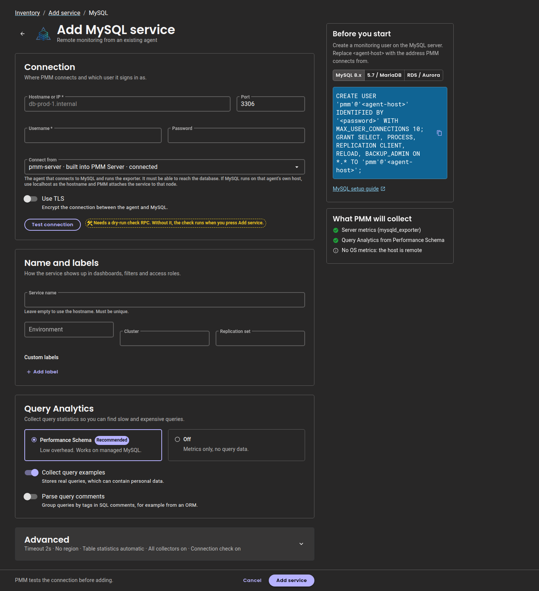
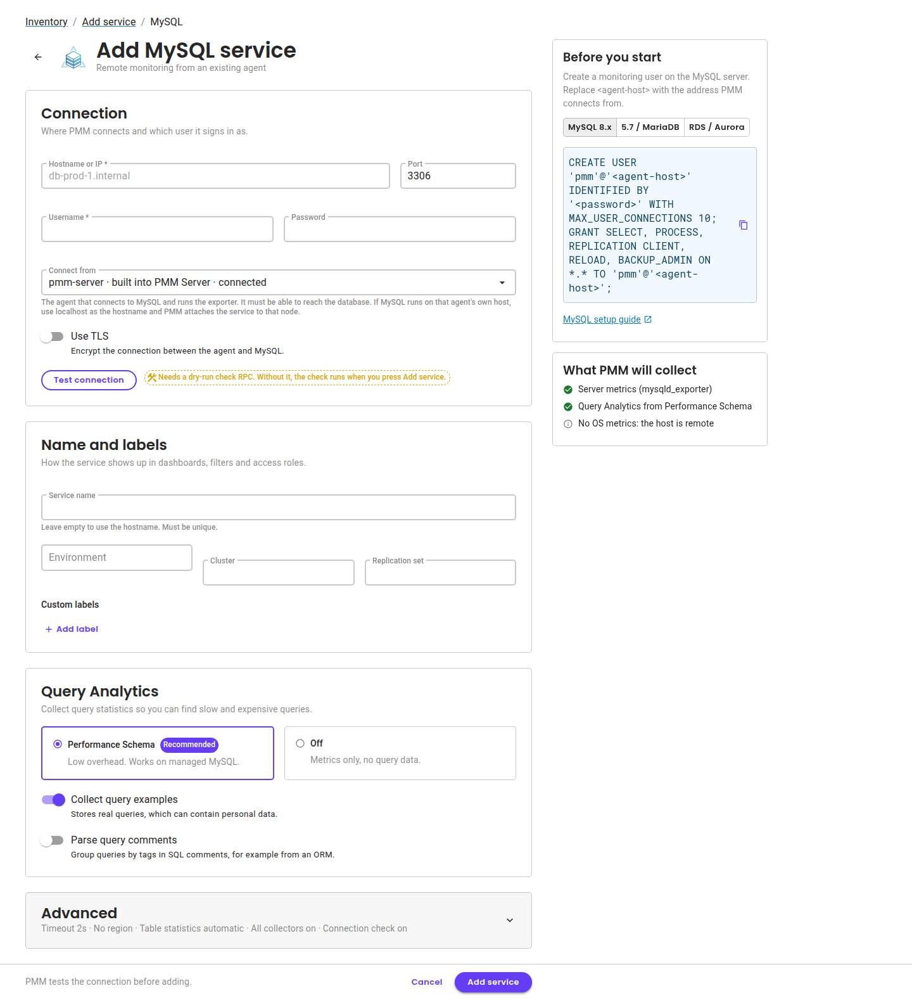
3. Tested, with TLS and Advanced open
- A successful test reports the version and QAN prerequisites. This needs the dry-run RPC, and grant checks would need agent work too (S2).
- TLS reveals multi-line certificate fields that accept pasted PEM or a file upload. Client certificate and key are optional, matching the CA-only support. "Skip verification" lives inside TLS.
- Units sit in adornments, and the max query length hint states its real default, 2048.
- Table statistics is a named choice: automatic (stop above 1,000 tables, the server default), a custom limit, or never.
- Disabled collectors use a real chip input. A persistent "Skip the connection check" switch says what skipping costs.
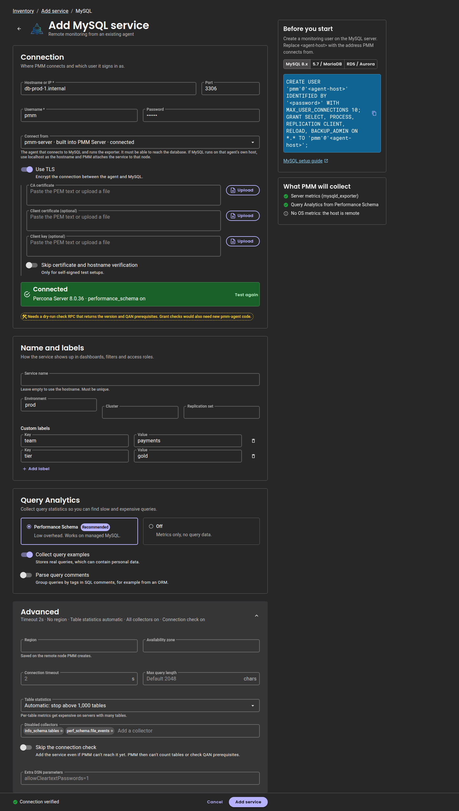
4. Connection failed
- This works with today's API: the add call's error is kept on the page instead of in a toast. It names the host, port and agent, explains the cause in plain words, and points to Connect from.
- The field that caused it is marked, and the footer lists fields that need attention. Mapping relies on known driver messages (DNS, refused, timeout, 28P01, 1045) and
AlreadyExists. Anything else shows the raw text inline, since structured error codes would need agent work. - "Add it anyway without checking" appears next to the failure, and the same option stays available under Advanced.
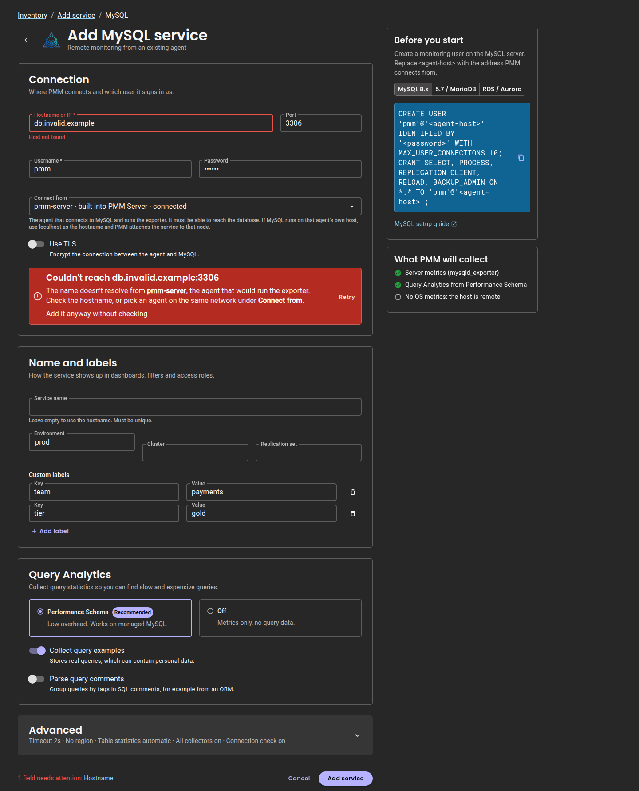
5. PostgreSQL-specific choices
- The test result shows which QAN extensions are installed, and the radio cards reuse that. This needs the dry-run RPC. Today's API can only report a pg_stat_monitor fallback after the add, as a warning the UI should show (N5).
- Database discovery and the connection cap are switches. The number field appears only when its switch is on.
- "Recommended" on pg_stat_monitor applies to self-hosted servers only. RDS and Azure offer just pg_stat_statements.
- Database moves into Connection next to the user it connects as.
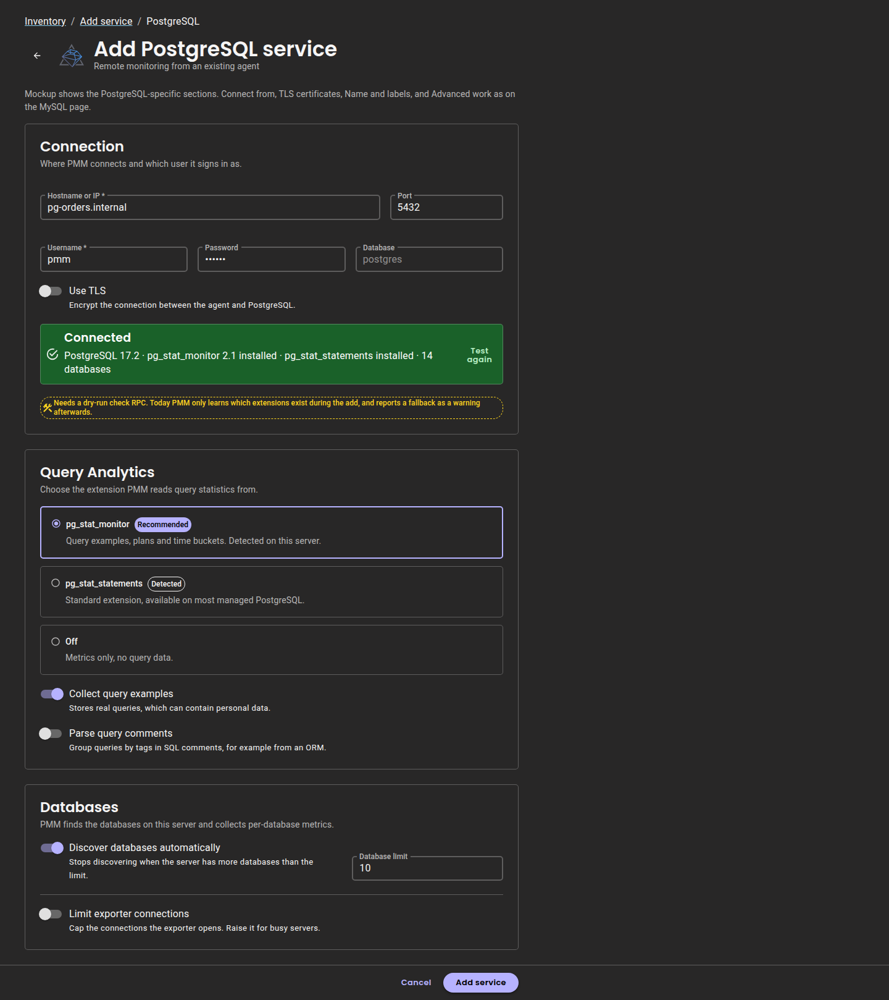
6. Amazon RDS and Aurora
- Step 1: the three auth methods become explicit choices (server identity, IAM role, access keys), which makes their exclusivity visible. Discover instances sits next to the credential it uses.
- Step 2: the chosen method collapses to a summary with Change. Results show count, regions and which instances are already monitored, with a filter. "Monitored" needs a client-side join with inventory RDS nodes on instance ID and region; there's no flag in the API.
- Each row's Configure opens the same technology form, prefilled with region visible. One instance per add, as the API requires.
- Errors show AWS's message inline. Per-region messages would need an API change, because the server swallows per-region errors.

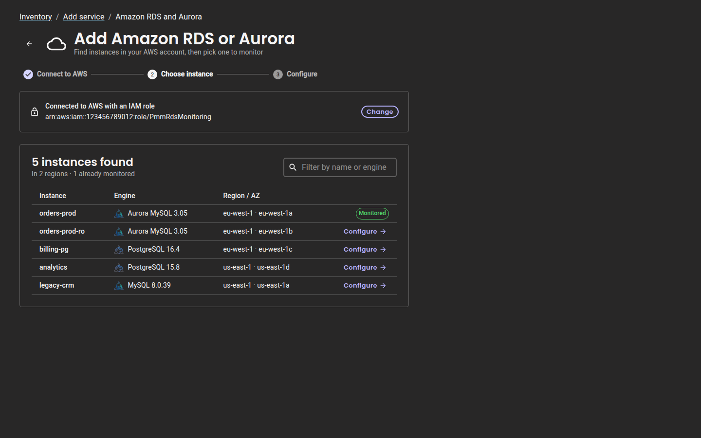
7. Added
- Confirms what was created and with which labels, and shows any server warning.
- Shows agent status from ListAgents, which exists today. "First metrics received" was dropped: the new UI has no metrics-query module.
- Links to the next useful place: the technology's dashboard and QAN filtered to the new service.
- Must trigger the same service-types refresh as Grafana's
SERVICE_ADDEDevent.
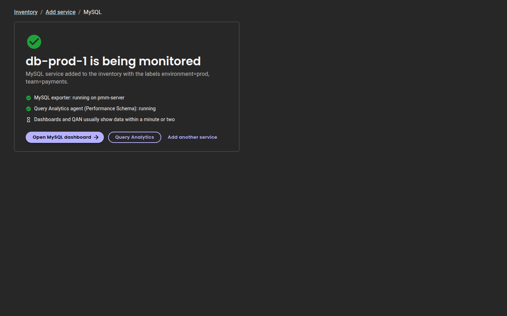
Building it in the PMM UI
Revised after the adversarial pass and split by what the current API supports. Phase 0 fixes most high-impact findings without backend changes.
- Data layer and route. API modules and TanStack Query hooks for management add, ListNodes, ListAgents, ListServices and RDS/Azure discovery; none exist in
ui/apps/pmm/src/api/yet. Add a takeover route for/add-instance/:typethat falls back to the Grafana page for types not yet ported. - Shared form shell. Page header, section cards, footer actions after the form, help panel, all driven by a per-technology config built from the field matrix. Use
react-hook-formwith a zod schema per technology, as the Settings pages do. Prefill defaults throughdefaultValues, not programmatic changes, so nothing shows as invalid on load (F4). Keepedit-instanceon the Grafana FormParts until it is ported, since it reusesLabels. - Errors and warnings (F1, N4, N5). Map server errors to fields and keep them on the page:
AlreadyExistsgoes to Service name, auth failures to the credentials, DNS, refused and timeout errors to Hostname and Port, TLS errors to TLS. Otherwise show the raw text inline. Show response warnings. - Validation and focus (N1, N7, N8). On submit, scroll to and focus the first invalid field and list the errors in the footer. Reject a scheme or spaces in hostnames, and show the duration format.
- Don't lose work (N2). Guard unsaved changes on Back, Cancel and route changes, and make Cancel leave the flow.
- Silent data bugs (N3, N11, N12). Send Region and AZ inside
add_node, send the MongoDB key password under its API name, and default MySQL table statistics to the server's automatic limit. - Port MySQL, PostgreSQL and MongoDB first, then Valkey, ProxySQL, HAProxy and External (node select rather than agent), then RDS and Azure. Carry every field listed under "Fields the build plan must carry".
- Picker and success page. Environment suggestions come from a scan of ListServices, since no endpoint lists them. Agent status comes from ListAgents. RDS "already monitored" comes from joining inventory nodes.
- Phase 1, needs the API. A dry-run check RPC that returns server version and QAN extensions and hands its result to the add, so the check doesn't run twice and nothing is lost by skipping it (S1, S6). Grant verification would follow, behind a pmm-agent version gate.
Open questions
- Dry-run check. Is a new RPC in scope for PMM-15003, or does the first version ship without Test connection and rely on inline errors from the add?
- Silent data bugs. Should N3, N11 and N12 be fixed in the current Grafana page now, as separate tickets, rather than waiting for the migration?
- MySQL table statistics. Is the UI's "never collect" default intentional? If not, the new form should match
pmm-admin's automatic limit. - Captured build. These screenshots come from a feature build. Should they be retaken on a release build before the review is shared widely?
- Azure discovery. Keep it behind the setting, or show it with a "turn on" link as in the mockup?
- Edit flow.
edit-instancereuses parts of this form. Should the same shell cover editing a service's labels and options (PMM-12575)?